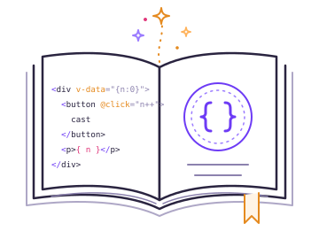
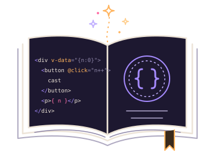
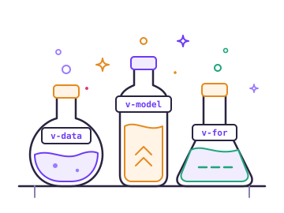
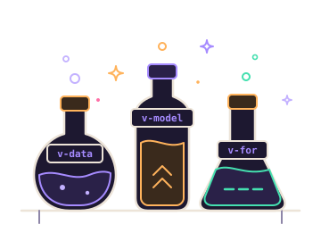
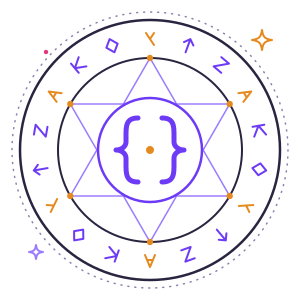
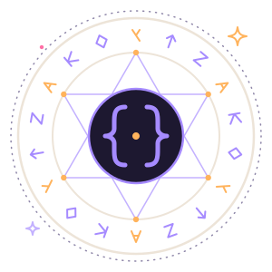
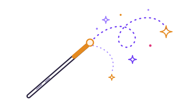
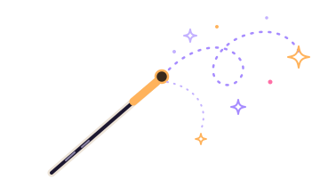

Write the spell in plain HTML. Watch it run.
JSX, reactive directives, components, HTTP and a router in one script tag. No bundler, no JSX transform, no build step. Pick a spell, edit the file, and watch the result run right next to it.

Brewing the result<script src="https://cdn.jsdelivr.net/npm/voodoojs@1.1.0/dist/voodoo.full.min.js" defer></script>
<script src="https://cdn.jsdelivr.net/npm/voodoojs@1.1.0/dist/voodoo.full.min.js" defer></script>
No build step
The file you edit is the file the browser runs
JSX usually needs a toolchain between your editor and the page. Voodoo reads the JSX at runtime, so there is nothing to install, configure or wait for. Open the file, even straight from your disk, and the spell is cast.


# 1. scaffold a project
npm create vite@latest my-app -- --template react
cd my-app
# 2. install a few hundred packages
npm install
# 3. a JSX transform, a bundler, a dev server
npm run dev
# 4. and before anyone can open it
npm run build
# 5. deploy dist/, not the files you wrote<script src="https://cdn.jsdelivr.net/npm/voodoojs@1.1.0/dist/voodoo.full.min.js" defer></script>
{
const fruits = ['apple', 'pear', 'grape'];
}
<ul>
{fruits.map((fruit) => (
<li>{fruit}</li>
))}
</ul>The honest cost: a compiler turns JSX into DOM calls ahead of time and Voodoo reads it at runtime, so a compiled framework wins on raw update speed and ships a smaller bundle. What you get back is a file you can open, edit and send to someone, with no node_modules anywhere in the story.


Directives
A grimoire of attributes
Behaviour is written where it belongs, on the element it changes. Once a directive is read, its attribute leaves the document, so what the browser keeps is ordinary HTML.
95 directives No eval, strict CSP friendly
-
v-dataReactive state for an element and everything inside it.
<div v-data="{ open: false }"> -
{ expression }Any expression, or JSX, straight into the markup.
<p>Hello, { user.name }</p> -
@eventEvents, with modifiers such as prevent, outside and debounce.
<form @submit.prevent="save()"> -
v-modelTwo-way binding for inputs, selects, checkboxes and components.
<input v-model.trim="email"> -
v-forKeyed lists, so a reorder moves nodes instead of rebuilding them.
<li v-for="t in todos" :key="t.id"> -
v-ifConditionals with v-else-if and v-else, or v-show to keep the node.
<p v-if="error">{ error }</p> -
:attrBind any attribute, class or style to state.
<a :href="url" :class="{ active }"> -
v-resourceAn HTTP request with its data, loading and error state.
<div v-resource="users: /api/users"> -
v-validateForms that validate, mask and submit themselves.
<input name="email" v-required v-email>
Components
Components you write as tags, never install
The library defines them when it starts, so the tag is the whole usage. They work with v-model and the validation directives, and every one below is running on this page.
29 built-in components


<v-button>
<v-input>
<v-switch> <v-checkbox>
<v-rating> <v-progress>
<v-alert> <v-badge> <v-tag>
<v-steps> <v-stat> <v-avatar>
Examples
Real apps, each one a single HTML file
Not snippets. Open the folder, open the file, and it runs: games, a 3D world, a store, a realtime chat and a dashboard, with no build step behind any of them.
To-do list
Add, complete, filter and persist, surviving a reload.
Kanban board
Drag cards between columns; the order is reactive state.
Store
Catalogue, filters and a cart with totals derived from state.
Admin dashboard
Charts, tables, filters and a date range from the built-in kit.
Tetris
A full game loop with the board held in reactive state.
3D open world
A drivable car with a heads-up display written as attributes.
Measured
Quick where it counts, honest where it is not
Seven implementations of the same 1,000 row list, all bundled for production, run back to back against the same document. Median of 30 samples in milliseconds, lower is better. A framework whose DOM differs from the hand-written baseline is excluded rather than timed.
Update 1 in 10
4.69 ms
ahead of hand-written vanilla, at 6.65
Clear 1,000 rows
30.14 ms
level with Preact, Vue and React
Read honestly: on create Voodoo is third of seven, and vanilla still builds the list twice as fast. Solid and Preact update faster, with a compiler. Voodoo is also the largest bundle here, so if size is your main constraint, Alpine and Preact are the honest recommendation.
The method, the raw numbers and how to run it yourselfCast your first spell in a minute
One script tag, or npm install voodoojs when you have a bundler anyway. This site is built with it, with no build step and no framework code of its own: view the source.


From the same author
More projects by kwy404
-
 MonsoonUtility-first CSS with no build step and 167 components
MonsoonUtility-first CSS with no build step and 167 components
-
 breakhoundFind bugs in any JavaScript library automatically
breakhoundFind bugs in any JavaScript library automatically
-
 vueleapMigrate Vue 2 to Vue 3 with one command
vueleapMigrate Vue 2 to Vue 3 with one command
-
 graphemelyEmoji safe string functions
graphemelyEmoji safe string functions
-
 numberparrotParse localized numbers and currency
numberparrotParse localized numbers and currency
-
 edgegoatEdge case test inputs
edgegoatEdge case test inputs
-
 cookieowlCookie consent banner for LGPD and GDPR
cookieowlCookie consent banner for LGPD and GDPR
-
 installkiteMake any website installable and offline capable
installkiteMake any website installable and offline capable
-
 a11ymedicAccessibility checker that gives the exact fix
a11ymedicAccessibility checker that gives the exact fix
-
 fontsketchTurn your handwriting into a font
fontsketchTurn your handwriting into a font
-
 kastorThe TypeScript ORM for almost every database
kastorThe TypeScript ORM for almost every database